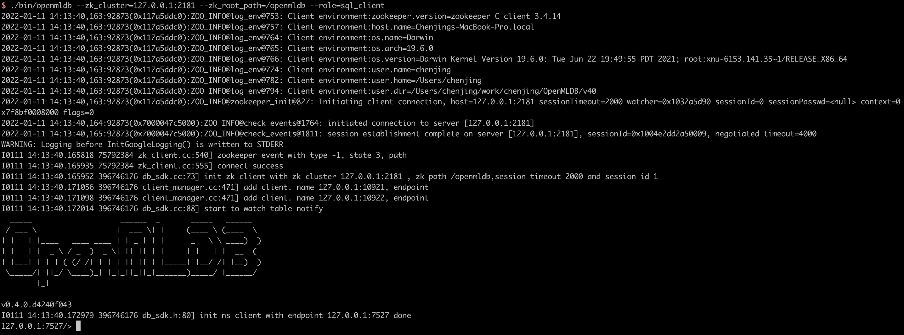

OpenMLDB 快速上手
Contents
OpenMLDB 快速上手#
本教程提供OpenMLDB快速上手指南。通过建立数据库、导入数据、离线特征计算、SQL 方案上线、在线实时特征计算，演示了单机版OpenMLDB和集群版OpenMLDB的基本使用流程。
1. 环境和数据准备#
Important
Docker engine版本需求 >= 18.03
本教程均基于 OpenMLDB CLI 进行开发和部署，因此首先需要下载样例数据并且启动 OpenMLDB CLI。我们推荐使用准备好的 docker 镜像来快速体验使用。
Note
如果你希望自己编译安装，可以参考我们的安装部署。
1.1 镜像准备#
拉取镜像（镜像下载大小大约 1GB，解压后约 1.7 GB）和启动 docker 容器
docker run -it 4pdosc/openmldb:0.6.0 bash
1.2 样例数据#
下载样例数据
curl https://openmldb.ai/demo/data.csv --output ./taxi-trip/data/data.csv
curl https://openmldb.ai/demo/data.parquet --output ./taxi-trip/data/data.parquet
2. 单机版OpenMLDB 快速上手#
2.1 单机版服务端和客户端#
启动单机版OpenMLDB服务端
# 1. initialize the environment and start standlone openmldb server
./init.sh standalone
启动单机版OpenMLDB CLI客户端
# Start the OpenMLDB CLI for the cluster deployed OpenMLDB
cd taxi-trip
../openmldb/bin/openmldb --host 127.0.0.1 --port 6527
以下截图显示了以上 docker 内命令正确执行以及 OpenMLDB CLI 正确启动以后的画面

2.2 基本使用流程#
单机版OpenMLDB的工作流程一般包含：建立数据库和表、数据准备、离线特征计算、SQL 方案上线、在线实时特征计算几个阶段。
Note
以下演示的命令如无特别说明，默认均在 OpenMLDB CLI 下执行（CLI 命令以提示符 > 开头以作区分）。
2.2.1 创建数据库和表#
> CREATE DATABASE demo_db;
> USE demo_db;
> CREATE TABLE demo_table1(c1 string, c2 int, c3 bigint, c4 float, c5 double, c6 timestamp, c7 date);
2.2.2 数据准备#
导入之前下载的样例数据（在 1.2 样例数据 中下载保存的数据）作为训练数据，用于离线和在线特征计算。
注意，单机版中一张表的数据没有离线在线隔离，所以该表将同时用于离线和在线特征计算。用户当然也可以手动为离线和在线导入不同的数据，即导入两张表。为简化起见，本教程的单机版使用了同一份数据做离线和在线计算。
> LOAD DATA INFILE 'data/data.csv' INTO TABLE demo_table1;
预览数据
> SELECT * FROM demo_table1 LIMIT 10;
----- ---- ---- ---------- ----------- --------------- ------------
c1 c2 c3 c4 c5 c6 c7
----- ---- ---- ---------- ----------- --------------- ------------
aaa 12 22 2.200000 12.300000 1636097390000 2021-08-19
aaa 11 22 1.200000 11.300000 1636097290000 2021-07-20
dd 18 22 8.200000 18.300000 1636097990000 2021-06-20
aa 13 22 3.200000 13.300000 1636097490000 2021-05-20
cc 17 22 7.200000 17.300000 1636097890000 2021-05-26
ff 20 22 9.200000 19.300000 1636098000000 2021-01-10
bb 16 22 6.200000 16.300000 1636097790000 2021-05-20
bb 15 22 5.200000 15.300000 1636097690000 2021-03-21
bb 14 22 4.200000 14.300000 1636097590000 2021-09-23
ee 19 22 9.200000 19.300000 1636097000000 2021-01-10
----- ---- ---- ---------- ----------- --------------- ------------
2.2.3 离线特征计算#
执行 SQL进行 特征抽取，并且将生成的特征存储在一个文件中，供后续的模型训练使用。
> SELECT c1, c2, sum(c3) OVER w1 AS w1_c3_sum FROM demo_table1 WINDOW w1 AS (PARTITION BY demo_table1.c1 ORDER BY demo_table1.c6 ROWS BETWEEN 2 PRECEDING AND CURRENT ROW) INTO OUTFILE '/tmp/feature.csv';
2.2.4 SQL 方案上线#
将探索好的SQL方案部署到线上，注意部署上线的 SQL 方案需要与对应的离线特征计算的 SQL 方案保持一致。
> DEPLOY demo_data_service SELECT c1, c2, sum(c3) OVER w1 AS w1_c3_sum FROM demo_table1 WINDOW w1 AS (PARTITION BY demo_table1.c1 ORDER BY demo_table1.c6 ROWS BETWEEN 2 PRECEDING AND CURRENT ROW);
上线后可以通过命令 SHOW DEPLOYMENTS 查看已部署的 SQL 方案；
> SHOW DEPLOYMENTS;
--------- -------------------
DB Deployment
--------- -------------------
demo_db demo_data_service
--------- -------------------
1 row in set
Note
本教程的单机版使用了同一份数据做离线和在线特征计算。如果用户希望使用另一份数据集，在部署之前重新导入新的数据集，并在部署中使用新数据集的表。
2.2.5 退出 CLI#
> quit;
至此我们已经完成了全部基于 OpenMLDB CLI 的开发部署工作，并且已经回到了操作系统命令行下。
2.2.6 实时特征计算#
实时线上服务可以通过如下 Web API 提供服务：
http://127.0.0.1:8080/dbs/demo_db/deployments/demo_data_service
\___________/ \____/ \_____________/
| | |
APIServer地址 Database名字 Deployment名字
实时请求的输入数据接受 json 格式，我们把一行数据放到请求的 input 域中。如下示例:
curl http://127.0.0.1:8080/dbs/demo_db/deployments/demo_data_service -X POST -d'{"input": [["aaa", 11, 22, 1.2, 1.3, 1635247427000, "2021-05-20"]]}'
如下为该查询预期的返回结果（计算得到的特征被存放在 data 域）：
{"code":0,"msg":"ok","data":{"data":[["aaa",11,22]]}}
说明：
api server执行请求，可以支持批请求，通过
input字段支持数组。每行input单独进行 request 计算。详细参数格式见RESTful API。request 结果说明见文末章节 ”3.3.8 实时特征计算的结果说明“。
3. 集群版OpenMLDB 快速上手#
3.1 集群版准备知识#
Caution
集群版相对于单机版使用体验上的最大区别主要为以下两点：
集群版需要分别维护离线和在线两部分的数据，即同一张表的数据有离线部分和在线部分，两部分是不共享的，需要分别导入。
集群版的部分命令是非阻塞任务，包括在线模式的
LOAD DATA，以及离线模式的LOAD DATA，SELECT，SELECT INTO命令。提交任务以后可以使用相关的命令如SHOW JOBS,SHOW JOB来查看任务进度，详情参见离线任务管理文档。
See also
集群版非阻塞任务可以设置为同步等待，详情见配置离线命令同步执行。
以上区别在下面的教程中都将会基于例子进行演示。
3.2 服务端和客户端#
启动集群版OpenMLDB服务端
# 1. initialize the environment and start cluster openmldb server
./init.sh
启动集群版OpenMLDB CLI客户端
cd taxi-trip
# Start the OpenMLDB CLI for the cluster deployed OpenMLDB
../openmldb/bin/openmldb --zk_cluster=127.0.0.1:2181 --zk_root_path=/openmldb --role=sql_client
以下截图显示正确启动集群版OpenMLDB CLI 以后的画面

3.3 基本使用流程#
集群版OpenMLDB的工作流程一般包含：建立数据库和表、离线数据准备、离线特征计算、SQL 方案上线、在线数据准备、在线实时特征计算几个阶段。
集群版OpenMLDB需要分别管理离线数据和在线数据。因此在完成SQL方案上线后，必须做在线数据的准备步骤。
Note
以下演示的命令如无特别说明，默认均集群版 OpenMLDB CLI 下执行（CLI 命令以提示符 > 开头以作区分）。
3.3.1 创建数据库和表#
> CREATE DATABASE demo_db;
> USE demo_db;
> CREATE TABLE demo_table1(c1 string, c2 int, c3 bigint, c4 float, c5 double, c6 timestamp, c7 date);
查看数据表:
> desc demo_table1;
--- ------- ----------- ------ ---------
# Field Type Null Default
--- ------- ----------- ------ ---------
1 c1 Varchar YES
2 c2 Int YES
3 c3 BigInt YES
4 c4 Float YES
5 c5 Double YES
6 c6 Timestamp YES
7 c7 Date YES
--- ------- ----------- ------ ---------
--- -------------------- ------ ---- ------ ---------------
# name keys ts ttl ttl_type
--- -------------------- ------ ---- ------ ---------------
1 INDEX_0_1641939290 c1 - 0min kAbsoluteTime
--- -------------------- ------ ---- ------ ---------------
3.3.2 离线数据准备#
首先，请切换到离线执行模式。在该模式下，只会处理离线数据导入/插入以及查询操作。
接着，导入之前下载的样例数据（在 1.2 样例数据 中已经下载）作为离线数据，用于离线特征计算。
> USE demo_db;
> SET @@execute_mode='offline';
> LOAD DATA INFILE 'file:///work/taxi-trip/data/data.parquet' INTO TABLE demo_table1 options(format='parquet', header=true, mode='append');
注意，LOAD DATA 命令为非阻塞，可以通过 SHOW JOBS 等离线任务管理命令来查看任务进度。
如果希望预览数据，用户亦可以使用 SELECT 语句，但是离线模式下该命令亦为非阻塞命令，查询结果需要查看日志，在这里不再展开。
3.3.3 离线特征计算#
执行 SQL进行 特征抽取，并且将生成的特征存储在一个文件中，供后续的模型训练使用。
> USE demo_db;
> SET @@execute_mode='offline';
> SELECT c1, c2, sum(c3) OVER w1 AS w1_c3_sum FROM demo_table1 WINDOW w1 AS (PARTITION BY demo_table1.c1 ORDER BY demo_table1.c6 ROWS BETWEEN 2 PRECEDING AND CURRENT ROW) INTO OUTFILE '/tmp/feature_data';
注意，离线模式SELECT INTO 命令为非阻塞，可以通过 SHOW JOBS 等离线任务管理命令来查看运行进度。
3.3.4 SQL 方案上线#
将探索好的SQL方案部署到线上，注意部署上线的 SQL 方案需要与对应的离线特征计算的 SQL 方案保持一致。
> DEPLOY demo_data_service SELECT c1, c2, sum(c3) OVER w1 AS w1_c3_sum FROM demo_table1 WINDOW w1 AS (PARTITION BY demo_table1.c1 ORDER BY demo_table1.c6 ROWS BETWEEN 2 PRECEDING AND CURRENT ROW);
上线后可以通过命令 SHOW DEPLOYMENTS 查看已部署的 SQL 方案；
> SHOW DEPLOYMENTS;
--------- -------------------
DB Deployment
--------- -------------------
demo_db demo_data_service
--------- -------------------
1 row in set
3.3.5 在线数据准备#
首先，请切换到在线执行模式。在该模式下，只会处理在线数据导入/插入以及查询操作。接着在在线模式下，导入之前下载的样例数据（在 1.2 样例数据 中已经下载）作为在线数据，用于在线特征计算。
> USE demo_db;
> SET @@execute_mode='online';
> LOAD DATA INFILE 'file:///work/taxi-trip/data/data.parquet' INTO TABLE demo_table1 options(format='parquet', header=true, mode='append');
注意，LOAD DATA 在线模式也是非阻塞命令，可以通过 SHOW JOBS 等离线任务管理命令来查看运行进度。
等待任务完成以后，预览在线数据：
> USE demo_db;
> SET @@execute_mode='online';
> SELECT * FROM demo_table1 LIMIT 10;
----- ---- ---- ---------- ----------- --------------- ------------
c1 c2 c3 c4 c5 c6 c7
----- ---- ---- ---------- ----------- --------------- ------------
aaa 12 22 2.200000 12.300000 1636097890000 1970-01-01
aaa 11 22 1.200000 11.300000 1636097290000 1970-01-01
dd 18 22 8.200000 18.300000 1636111690000 1970-01-01
aa 13 22 3.200000 13.300000 1636098490000 1970-01-01
cc 17 22 7.200000 17.300000 1636108090000 1970-01-01
ff 20 22 9.200000 19.300000 1636270090000 1970-01-01
bb 16 22 6.200000 16.300000 1636104490000 1970-01-01
bb 15 22 5.200000 15.300000 1636100890000 1970-01-01
bb 14 22 4.200000 14.300000 1636099090000 1970-01-01
ee 19 22 9.200000 19.300000 1636183690000 1970-01-01
----- ---- ---- ---------- ----------- --------------- ------------
注意：
与单机版的 OpenMLDB 不同，集群版的 OpenMLDB 需要分别维护离线和在线数据。
用户需要成功完成 SQL 上线部署后，才能准备上线数据，否则可能会上线失败。
3.3.6 退出 CLI#
> quit;
至此我们已经完成了全部基于集群版OpenMLDB CLI 的开发部署工作，并且已经回到了操作系统命令行下。
3.3.7 实时特征计算#
注意， 按照默认的部署配置，apiserver 部署的 http 端口为 9080。
实时线上服务可以通过如下 Web API 提供服务：
http://127.0.0.1:9080/dbs/demo_db/deployments/demo_data_service
\___________/ \____/ \_____________/
| | |
APIServer地址 Database名字 Deployment名字
实时请求的输入数据接受 json 格式，我们把一行数据放到请求的 input 域中。如下示例:
curl http://127.0.0.1:9080/dbs/demo_db/deployments/demo_data_service -X POST -d'{"input": [["aaa", 11, 22, 1.2, 1.3, 1635247427000, "2021-05-20"]]}'
如下为该查询预期的返回结果（计算得到的特征被存放在 data 域）：
{"code":0,"msg":"ok","data":{"data":[["aaa",11,22]]}}
3.3.8 实时特征计算的结果说明#
实时请求（执行deployment），是请求模式（request模式）的SQL执行。与批处理模式（batch模式）不同，请求模式只会对请求行（request row）进行SQL计算。在前面的示例中，就是POST的input作为请求行，假设这行数据存在于表demo_table1中，并对它执行SQL：
SELECT c1, c2, sum(c3) OVER w1 AS w1_c3_sum FROM demo_table1 WINDOW w1 AS (PARTITION BY demo_table1.c1 ORDER BY demo_table1.c6 ROWS BETWEEN 2 PRECEDING AND CURRENT ROW);
具体计算逻辑如下（实际计算中会进行优化，减少计算量）：
根据请求行与窗口的
PARTITION BY分区，筛选出c1为”aaa”的行，并按c6从小到大排序。所以理论上，分区排序后的中间数据表，如下表所示。其中，请求行为排序后的第一行。
----- ---- ---- ---------- ----------- --------------- ------------
c1 c2 c3 c4 c5 c6 c7
----- ---- ---- ---------- ----------- --------------- ------------
aaa 11 22 1.2 1.3 1635247427000 2021-05-20
aaa 12 22 2.200000 12.300000 1636097890000 1970-01-01
aaa 11 22 1.200000 11.300000 1636097290000 1970-01-01
----- ---- ---- ---------- ----------- --------------- ------------
窗口范围是
2 PRECEDING AND CURRENT ROW，所以我们在上表中截取出真正的窗口，请求行就是最小的一行，往前2行都不存在，但窗口包含当前行，因此，窗口只有请求行这一行。窗口聚合，对窗口内的数据（仅一行）进行c3求和，得到22。
于是输出结果为：
----- ---- -----------
c1 c2 w1_c3_sum
----- ---- -----------
aaa 11 22
----- ---- -----------